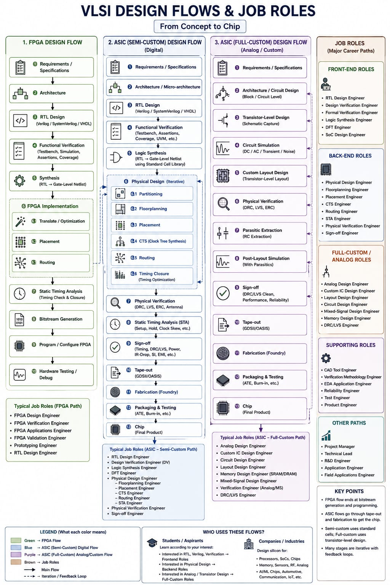

VLSI Design Flow is the sequence of steps used to transform a digital design specification into a physical integrated circuit.
The VLSI design process includes RTL design, functional verification, synthesis, Design for Testability (DFT), floorplanning, placement, Clock Tree Synthesis (CTS), routing, physical verification and GDSII generation.

Original VLSI Design Flow diagram created by Rohit Itware.